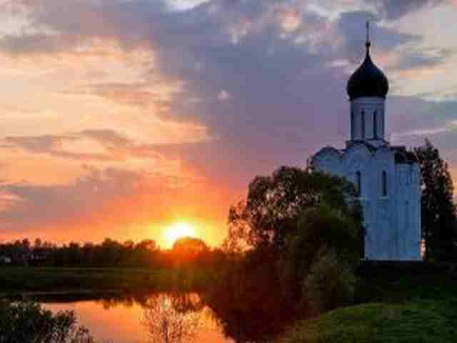

Что такое Церковь?

Что такое Церковь? Размышления Митрополита Марка

Церковь – это собрание верующих. Обратимся к истории понятия. Современное слово в русском языке, в его современном фонетическом произношении — «церковь», по мнению ученых-языковедов, восходит к греческому прилагательному «Κυριακόν» – «Господне, Господу принадлежащее» (от него же произошло название церкви во многих языках мира, в частности, германских: нем. «Kirche»; англ. «church»; слав. «цръквь», «цркы»; рус. «церковь»).
При этом в греческой традиции, о чем свидетельствуют тексты Нового Завета, и святоотеческой литературы, понятие «церковь» обозначалось другим греческим словом: «Ἐκκλησία», то есть «собрание». И непосредственно к этому понятию восходит слово церковь на латыни (и у большинства народов романской языковой группы: фр. «église»; испан. «iglesia»). Итак, церковь – это собрание людей, принадлежащих Господу.
На самом деле у каждого из этих слов есть свое определение. Храм происходит от старорусских слов: «хоромы», «храмина» и означает здание или архитектурное сооружение, в котором совершаются богослужения.
У слова «церковь» значений намного больше. Да, «церковью», конечно, может называться и храм Господень, то есть место, куда люди собираются для молитвы. Но первое значение – совсем другое.
Церковь – это собрание верующих. Обратимся к истории понятия. Современное слово в русском языке, в его современном фонетическом произношении — «церковь», по мнению ученых-языковедов, восходит к греческому прилагательному «Κυριακόν» – «Господне, Господу принадлежащее» (от него же произошло название церкви во многих языках мира, в частности, германских: нем. «Kirche»; англ. «church»; слав. «цръквь», «цркы»; рус. «церковь»).
При этом в греческой традиции, о чем свидетельствуют тексты Нового Завета, и святоотеческой литературы, понятие «церковь» обозначалось другим греческим словом: «Ἐκκλησία», то есть «собрание». И непосредственно к этому понятию восходит слово церковь на латыни (и у большинства народов романской языковой группы: фр. «église»; испан. «iglesia»). Итак, церковь – это собрание людей, принадлежащих Господу.
В 25-м Псалме говорится: «Возненавидех церковь лукавнующих, и с нечестивыми не сяду». То есть имеется в виду не здание храма, а собрание нечестивых.
Интересно, что первоначально слово «Ἐκκλησία», которое мы сегодня переводим как «церковь», не имело религиозного значения, но обозначало группу людей, которых призывали время от времени на те или иные важные народные собрания. «Ἐκκλησία» произошло из двух слов «ἐκ» – «из» и καλέω – «призывать». Таким образом, буквально — это «призвать откуда-то», «вызвать из».
То есть Церковь – это собрание людей, не только принадлежащих Господу, но и призванных Богом. Каждого из нас Христос призывает к Себе, как в Своей земной жизни Он, выйдя на проповедь, призвал к Себе учеников, говоря: «идите за Мною, и Я сделаю вас ловцами человеков» (Матф. 4:19).
Наша славянская традиция, восприняв за основу греческое «Κυριακόν», определяющим значением понятия «церковь» избрала — принадлежность Господу. То есть в языковом сознании славянских и германских народов в слове «церковь» главенствующий смысл заключается в том, что и сама церковь, и все люди в ней — Господни, они принадлежат Господу. В слове же «Ἐκκλησία» определяющим становится понятие призвания, призвания человека Богом. Призвания в самом глубоком, самом возвышенном понимании этого слова. Призвания – как покаяния.
Здесь снова необходимо оговориться. Большинство людей понимают слово покаяние – как раскаяние во грехах. На самом же деле раскаяние – это всего лишь часть покаянного процесса. Главный, прямой смысл слова покаяние – это изменение ума, «перемена мысли», «переосмысление» (др.-греч. Μετάνοια), осознание своей греховности и отказ от прежней нечистой жизни.
Пример такого призвания Господом и ответного покаяния человека мы встречаем в Евангелии. После чудесного лова рыбы на озере Геннисаретском, у Симона Петра вдруг открываются глаза, внутреннее зрение — он видит Христа, осознает, Кто перед ним, и, припадая к коленям Иисуса, говорит: «выйди от меня, Господи! потому что я человек грешный». (Лк. 5:8)
Или призвание Апостола Павла. Этот человек, звали его Савл, соблюдал все заповеди своего народа, жил в посте, воздержании и молитве, и был совершенно искренно уверен в своей правоте, в истинности своего служения. И вдруг на пути из Иерусалима в Дамаск «внезапно осиял его свет с неба. Он упал на землю и услышал голос, говорящий ему: Савл, Савл! что ты гонишь Меня? Он сказал: кто Ты, Господи? Господь же сказал: Я Иисус, Которого ты гонишь». (Деян. 9: 3-5). И Павел ослеп, и три дня не ел и не пил. И из ревнителя иудейского Закона, из жестокого гонителя христиан превратился в одного из самых горячих последователей Христа.
Итак, церковь – это не дерево или камни, это люди, это община, которая собирается в храме и которую освящает своим присутствием Сам Господь. И церковь эта может быть посреди леса или пустыни: «где двое или трое собраны во имя Мое, там Я посреди них» (Мф. 18:19).
Словом «Церковь» может также обозначаться «собрание людей, принадлежащих Господу», в пределах епархии или какого-то места. Отсюда название «Поме́стная Церковь». Всего в современном Диптихе, принятом в Русской Церкви, упоминаются 15 автокефальных поместных церквей
Еще более масштабное понятие – Вселенская Церковь. То есть собрание православных христиан, живущих по всему миру. Вселенская Церковь объединяет все Поместные Церкви.
И, наконец, в самом полном смысле слова Церковь Христова – это собрание всех, кто верит и любит Христа, причем собрание не только живущих, но и умерших. Это Церковь Небесная, где пребывают Пресвятая Богородица, Ангельские силы, все святые и спасшиеся христиане, которая также именуется Торжествующей, и Церковь Земная, называющаяся Воинствующей, поскольку ведет постоянную брань с отцом всякой лжи и его приспешниками. Церковь – единое Тело Христово. И все мы являемся, или по крайней мере, стараемся быть членами этой Церкви, и потому мы молимся и за живых, и за усопших, поскольку верим в бессмертие души.
Что касается слова «собор», то в современном понимании – это главное церковное сооружение города или монастырского комплекса, в котором богослужение совершает епископ (архиепископ, митрополит, патриарх). Само слово происходит от старославянских «съезд», «собрание». Главное отличие собора от храма — особый статус, усвояемый церковному сооружению по причине особого положения храма или его значения. Русскому слову «собор» в западноевропейских языках соответствуют cathedral (англ), cathédrale (фр.), cattedrale (итал.), происходящие от слова «кафедра». То есть храм с кафедрой епископа.